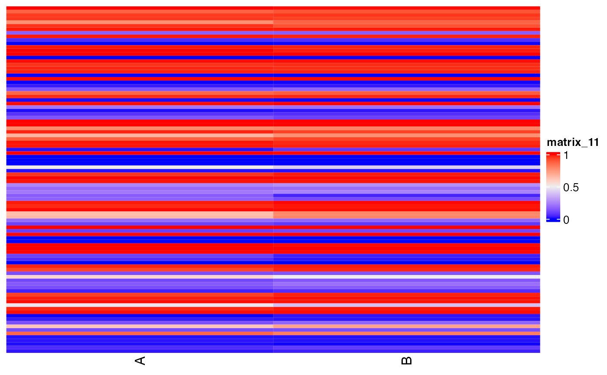
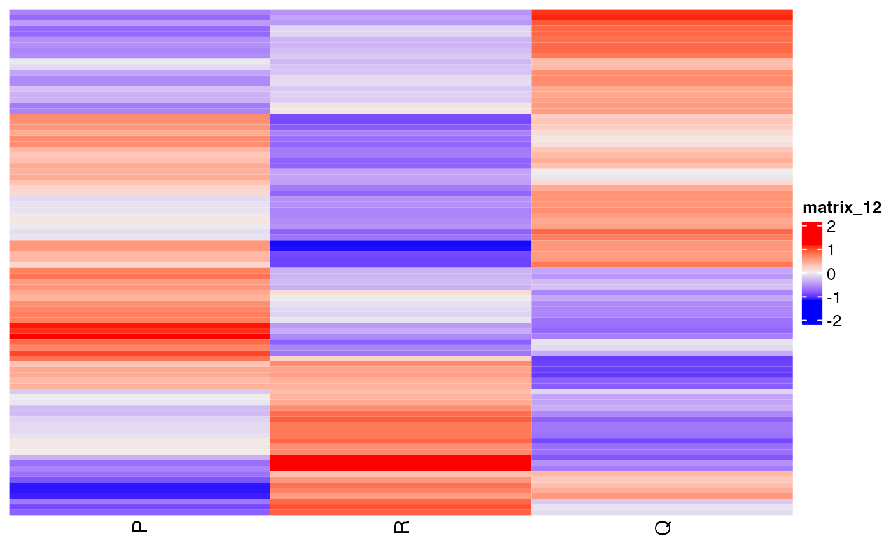

Generate a heatmap for a given list of ASE.
Source:R/splicewiz_wrappers.R
get_ase_data_matrix_heatmap.RdGenerate a heatmap for a given list of ASE.
Usage
get_ase_data_matrix_heatmap(
se,
event_names,
samples,
column_condition = "condition",
method = "PSI",
summarise_groups = TRUE,
summarise_groups_by = "mean",
show_row_names = FALSE,
cluster_rows = FALSE,
cluster_columns = FALSE,
show_column_dend = FALSE,
show_row_dend = FALSE,
...
)Arguments
- se
an object of class NxtSE.
- event_names
a character vector denoting valid spliceWiz event names.
- samples
a character vector denoting valid sample names.
- column_condition
a name of column in se storing condition. Deafault: "condition".
- method
one of the character strings: "Z-score", "PSI" ,"logit".
- summarise_groups
pass to
summarise_groupsofget_ASE_data_matrix().- summarise_groups_by
pass to
summarise_groups_byofget_ASE_data_matrix().- show_row_names
logical, whether to show row names in the heatmap.
- cluster_rows
logical, whether to clusters rows in the heatmap.
- cluster_columns
logical, whether to cluster column in the heatmap or not.
- show_column_dend
logical, whether to show column dendrogram in the heatmap or not.
- show_row_dend
logical, whether to show row dendrogram in the heatmap or not.
- ...
other parameters to pass
ComplexHeatmap::Heatmap()
Examples
se <- SpliceWiz::SpliceWiz_example_NxtSE(novelSplicing = TRUE)
SpliceWiz::colData(se)$treatment <- rep(c("A", "B"), each = 3)
SpliceWiz::colData(se)$replicate <- rep(c("P","Q","R"), 2)
res <- run_ase_diff_analysis(x = se, test_factor = "treatment", test_nom = "A" ,test_denom = "B", IRmode ="annotated", cutoff_lfc = 0.6, cutoff_padj = 1, regul_based_upon = 2)
#> Mar 29 12:40:42 Performing edgeR contrast for included / excluded counts separately
#> Mar 29 12:40:43 Performing edgeR contrast for included / excluded counts together
event_names = get_ASEsets_by_regulation(x = res, sample_comparisons = "A_VS_B", regul = "all") %>% unlist()
get_ase_data_matrix_heatmap(se, event_names = event_names, samples = c("A" ,"B"), column_condition = "treatment", summarise_groups = FALSE )
#> Warning: The input is a data frame-like object, convert it to a matrix.

get_ase_data_matrix_heatmap(se, event_names = event_names, samples = c("A" ,"B"), column_condition = "treatment", summarise_groups = TRUE )
#> Warning: The input is a data frame-like object, convert it to a matrix.

get_ase_data_matrix_heatmap(se, event_names = event_names, samples = c("P" ,"Q","R"), column_condition = "replicate",method = "Z-score", cluster_rows = TRUE)
#> Warning: The input is a data frame-like object, convert it to a matrix.